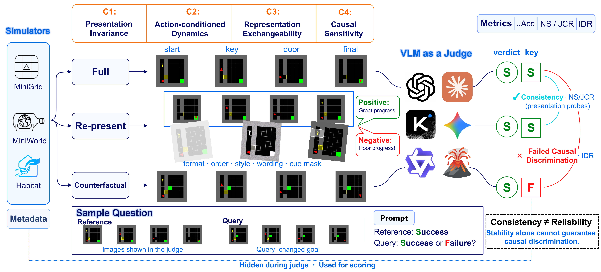

Correctness
Does the verdict agree with the simulator-grounded task outcome?
State-Conditional Invariance and
Presentation-Aware Diagnostics
* Equal contribution · † Corresponding author
University of Science and Technology of China
NeurIPS 2026 Evaluations and Datasets Track
THE RELIABILITY PRINCIPLE
Presentation can change without changing the task outcome. A causal intervention cannot. A reliable judge must distinguish the two.

Loading recorded examples…


INSIDE THE BENCHMARK
From local observations to trajectory-level decisions, inspect the evidence behind each question.
QUESTION · ORIGINAL PROMPT
SIMULATOR GROUND TRUTH
Curated examples from a freshly generated base exam: A 103 · B 144 · C 486 · D 144 · E 325. Answers are simulator labels, not model predictions.
BEYOND A SINGLE SCORE
Does the verdict agree with the simulator-grounded task outcome?
Does the judgment survive semantics-preserving changes to the evidence interface?
Does the judgment respond when an intervention changes the task outcome?
@inproceedings{zhang2026reliablevlmjudges,
title = {Towards Reliable {VLM} Judges: State-Conditional Invariance and Presentation-Aware Diagnostics},
author = {Zhang, Qinan and Wang, Xinyu and Jin, Qihang and Wang, Tianyuan and Luo, Hongbing and Li, Pengfei and Lv, Wenjun and Kang, Yu and Di, Jian},
booktitle = {Advances in Neural Information Processing Systems},
year = {2026},
note = {Accepted to the NeurIPS 2026 Evaluations and Datasets Track},
eprint = {2611.13596},
archivePrefix = {arXiv},
primaryClass = {cs.AI},
url = {https://arxiv.org/abs/2611.13596}
}REPRODUCIBLE BY CONSTRUCTION
Generate images, build exams, collect responses and score them with the same pipeline.